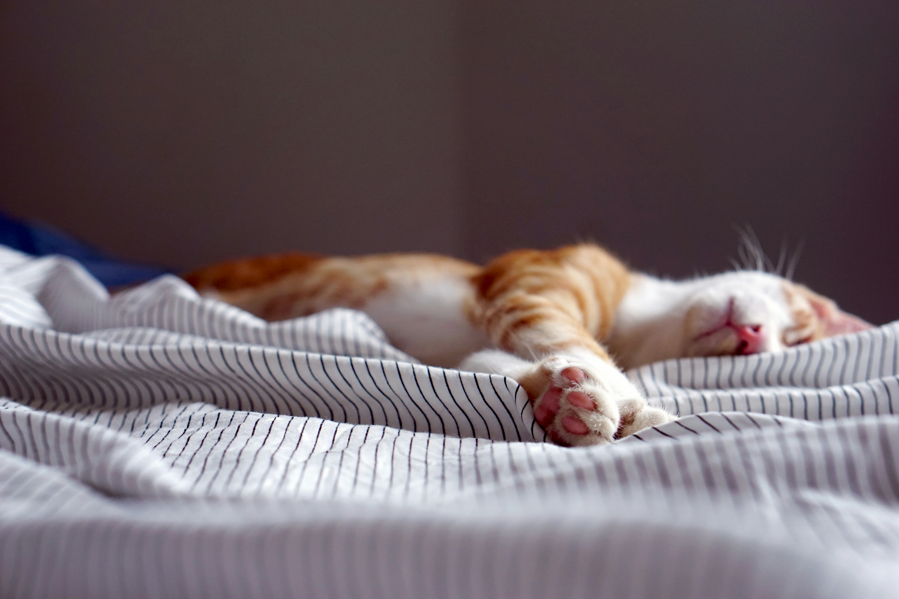

Sleepmaxxing sin gadgets: cómo dejar de acostarte tarde por inercia y dormir mejor de verdad

Si te acuestas tarde por inercia, no estás solo. Es el club más grande del mundo. Y tiene una norma: no se entra porque quieras, se entra porque “solo un vídeo más”, “solo un capítulo más”, “solo miro esto rápido” y de repente… hola, 01:17.
Y luego pasa lo de siempre: te levantas con la cabeza espesa, el cuerpo pesado y el humor justo. Y entonces tu día se convierte en una negociación continua: “mañana empiezo”, “mañana lo arreglo”, “mañana me acuesto temprano”. Mañana, mañana, mañana… hasta que te das cuenta de que el “mañana” es un sitio donde no vive nadie.
Lo que ahora llaman sleepmaxxing es una palabra moderna para una cosa antigua y útil: dormir mejor con un sistema mínimo. El problema es que internet lo ha convertido en un bazar: anillos, apps que te ponen nota, luces raras, sprays, hacks virales… y tú intentando “optimizar” mientras el piloto automático te arrastra a acostarte tarde como si fuera un tobogán sin freno.[1]
Aquí va el enfoque ViveConUve: directo, práctico y cero teatro. No te voy a decir “haz mil cosas”. Te voy a decir qué tornillos apretar para cortar la inercia.
Qué es sleepmaxxing en la vida real (y por qué a muchos les sale al revés)
El sleepmaxxing real no es dormir perfecto. Es despertar con energía suficiente para que el día no empiece con una pelea.
El sleepmaxxing “de redes” suele ir al revés: intentas controlar el sueño con fuerza. Te acuestas “porque toca”, miras el reloj, te cabreas porque “tengo que dormir ya”… y conviertes la cama en un examen. Y el sueño no funciona así: cuanto más lo persigues, más se escurre.
Lo sensato es más aburrido y más efectivo: menos control mental y más control del entorno. Menos “hacer cosas”. Más dejar de hacer las que te sabotean.
Si te acuestas tarde por inercia, el enemigo no es la cama: es el “después de cenar”
La inercia no empieza a las 00:30. Empieza mucho antes, cuando el día se apaga y tú te quedas en ese limbo de “ya he terminado… pero no cierro”. Y ese limbo es peligrosísimo porque ahí el cerebro pide anestesia: pantalla, scroll, serie, vídeos, noticias… lo que sea que no te obligue a pensar.
No es que seas “un desastre”. Es que estás cansado y el móvil es el camino más corto a no sentir nada durante un rato. El problema es que el móvil no te da descanso. Te da distracción. Y la distracción, por la noche, se paga con intereses.
El tornillo que manda: la hora de despertar (sí, manda más que la de acostarte)
La mayoría intenta arreglar el sueño por la puerta equivocada: “me acuesto antes”. A veces ayuda. Pero lo que de verdad ordena el sistema es levantarte a una hora parecida la mayoría de días.[2]
Si tu despertar es un acordeón, tu noche también lo será. Si un día te levantas tarde, el cuerpo no acumula sueño a la hora normal y por la noche… sorpresa: no te entra. Y ahí vuelves al mismo bucle: “no tengo sueño → pantalla → inercia → tarde”.
No te digo que madrugues por postureo. Te digo que elijas una hora razonable y la repitas casi siempre. No perfecto. Suficientemente estable.
Luz: el hack gratis que la gente evita y luego compra en Amazon
La luz es una señal potente para tu reloj interno.[3] Por la mañana, luz (cuando puedas). Por la noche, baja el volumen. No hace falta vivir a oscuras, pero tampoco tener el salón como un plató a las 23:50 mientras te preguntas por qué estás “activado”.
Y aquí viene lo obvio: si tu noche empieza con pantallas fuertes y acaba con pantallas fuertes, tu cerebro recibe el mensaje: “esto sigue”. Y claro que sigue. Sigue el scroll. Sigue la inercia.
Tu cama no es un coworking con mantita
Si trabajas, discutes, planeas, scrolleas y te activas en la cama, tu cerebro aprende que cama = alerta. Luego te tumbas y… sorpresa: alerta.
La cama es para dormir. Y para lo otro. No para convertirte en detective de tus problemas a las 00:38.
Y ojo, porque aquí está el truco sucio: no te acuestas tarde “porque sí”, te acuestas tarde porque tu cama se ha convertido en una sala multiusos. Hoy es Netflix, mañana es WhatsApp, pasado mañana es “voy a responder un correo rápido”, y el domingo es “voy a mirar una cosa del trabajo” (la cosa del trabajo dura 47 minutos y termina con tres pestañas abiertas y cero paz).
La cama-coworking tiene un superpoder: hace que el cerebro asocie colchón con actividad. Y si tu cerebro cree que la cama es un sitio donde se resuelven cosas, no esperes que de pronto se convierta en un sitio donde se apaga. Eso no es insomnio. Eso es entrenamiento.
Si necesitas pensar, piensa en una silla. Si necesitas escribir “lo de mañana”, lo escribes en una silla. Si necesitas “cerrar el día”, lo cierras en una silla. Y luego cama. La cama no negocia, la cama cumple su función.
El móvil en la cama es como meter un tambor en un monasterio
“Me relaja mirar el móvil”. Claro. Te relaja igual que rascarte una picadura: alivia dos segundos y luego pica más.
Si el móvil llega a la cama contigo, la inercia tiene autopista. Porque tú no “decides” dormir: tú “te caes” en vídeos.
Aquí no hace falta fuerza de voluntad. Hace falta fricción. La solución más simple y más efectiva: el móvil no duerme contigo. Se carga fuera o lejos. No por moral. Por mecánica.
¿Que te da ansiedad? Perfecto: eso confirma que el móvil estaba mandando más de lo que creías.
Y por si te sirve de imagen: meter el móvil en la cama y esperar dormir es como entrar en una biblioteca con un altavoz a volumen 8 y pedir “silencio, por favor”. Tú puedes pedirlo. El altavoz se ríe.
Cafeína: no te la quito… te la coloco (porque también alimenta la inercia)
La inercia nocturna no siempre es “me engancho al móvil”. A veces es “estoy cansado pero no me entra el sueño”. Y ahí la cafeína suele estar haciendo guardia.
Hay un estudio donde 400 mg de cafeína incluso 6 horas antes de dormir ya empeoraba el sueño de forma relevante.[4] Traducción: ese “cafelito de tarde” puede ser el ladrón invisible. No te da energía; te la pide prestada y te la cobra por la noche.
Si te acuestas tarde por inercia, prueba una semana con una regla sencilla: cafeína temprano y punto. No es castigo. Es recuperar control.
Y si eres de “yo duermo igual aunque tome café”, perfecto: entonces esta prueba te da dos opciones. O confirmas que no te afecta tanto, o descubres que sí te afecta y estabas funcionando con el listón por los suelos. En ambos casos ganas.
Alcohol: te puede apagar, pero no te recarga
El alcohol tiene ese truco barato: parece que ayuda porque te “apaga”. Pero dormir no es caer. Dormir es recuperar. Y hay evidencia divulgativa sólida de que el alcohol puede empeorar la calidad del sueño y alterar su estructura, dejándote peor al día siguiente aunque “hayas dormido”.[5]
Si tú quieres energía de verdad por la mañana, el alcohol por la noche es un acuerdo raro: hoy te apaga, mañana te pasa factura.
Y aquí lo divertido: mucha gente usa alcohol para “dormir mejor” y luego se queja de que se despierta roto. Es como echar arena al motor para que “suene menos” y luego sorprenderte porque no tira.
Temperatura: si tu cuarto parece un invernadero, no es “insomnio”
Esto es de lo más tonto y de lo más efectivo: dormir suele ser más fácil en un entorno fresco. Muchas guías hablan de un rango orientativo alrededor de 18–20°C.[6] No necesitas obsesionarte con el número. Solo evita el “duermo con calor, me destapo, me tapo, me despierto, me vuelvo a despertar”. Eso no es mala suerte. Eso es física.
Y esto conecta con otra realidad: a veces “duermo mal” significa simplemente “mi dormitorio es hostil”. Luz, calor, ruido, pantalla… y tú esperando que el cuerpo haga magia. No hace magia. Hace lo que puede.
Hacks virales “pro”: si tienes que pegarte algo para dormir, igual estamos perdiendo el norte
El ejemplo perfecto: mouth taping (pegarte la boca con cinta). Queda muy biohacker. Y yo te digo: tu respiración no es un experimento de redes.
Hay advertencias médicas sobre riesgos y sobre no recomendarlo en ciertos casos (ronquidos, sospecha de apnea, problemas respiratorios, ansiedad, irritación).[7] Si roncas fuerte, te despiertas ahogándote, estás KO de día o duermes “mucho” y sigues fatal: aquí no hay hacks. Profesional y punto.
Y ojo con la trampa mental: cuando estás cansado, te vuelves vulnerable a cualquier cosa que suene a “solución rápida”. Es humano. Pero el sueño no se arregla con un truco viral. Se arregla con lo que no vende: consistencia, fricción y entorno.
El antídoto real para la inercia: un “cierre de día” tan simple que te dará rabia
Si tú te acuestas tarde por inercia, no necesitas motivación. Necesitas un interruptor.
Te propongo esto: un cierre de día ridículamente corto, pero innegociable, que le diga al cerebro “se acabó”. No tiene que ser bonito. Tiene que ser repetible.
Hazlo así: cuando termine lo último del día (cena, ducha, lo que sea), haces un cierre de 10 minutos. No lo llames “rutina”. Llámalo cierre, porque es exactamente eso: cerrar. Diez minutos donde no “te entretienes”; cierras. Un poco de orden, higiene básica, y una nota simple con lo de mañana para que tu cabeza deje de masticarlo en la almohada. Luego cama. Y el móvil fuera.
¿Lo vas a hacer perfecto? No. ¿Lo vas a hacer 5 noches de 7? Si sí, lo notarás. Porque el sueño mejora cuando el día deja de invadir la cama.
Y aquí viene el detalle picante: si no tienes cierre, tu cerebro se inventa uno. Se llama “scroll hasta que me caiga”. Es un cierre, sí. Solo que te deja peor. Tú decides qué cierre te conviene.
Experimento ViveConUve: 7 noches para cortar la inercia (sin volverte intenso)
Durante 7 noches, no busques “dormir perfecto”. Busca llegar a la cama sin arrastre.
- Mantén una hora razonable de despertar la mayoría de días.
- Mete luz por la mañana cuando puedas.
- Baja luz y estímulo por la noche.
- Coloca la cafeína temprano.
- Evita alcohol cerca de dormir si estás probando en serio.
- Haz tu dormitorio más “cueva” (fresco, oscuro, aburrido) que “sala de ocio”.
- Y, sobre todo: cierre de día de 10 minutos.
Y mide con vida real, no con apps: ¿te levantas con menos niebla? ¿tienes menos hambre rara? ¿estás menos irritable? ¿te cuesta menos moverte? Si sí, vas bien. El objetivo no es una nota. El objetivo es que el día pese menos.
“Me despierto a las 3:00”: qué hacer sin liarte
Si te despiertas y la cabeza arranca, no conviertas la cama en una sala de reuniones. Si estás espabilado de verdad, levántate, baja luz, haz algo aburrido (leer dos páginas, respirar lento, lo que sea), y vuelve cuando notes somnolencia. Si te quedas en la cama enfadado, solo entrenas al cerebro a asociar cama con pelea. No necesitas ganar esa guerra. Necesitas cambiar el escenario.
CTA: suscríbete y te mando la checklist “7 señales de que tu cuerpo te está pidiendo cambio”
Si quieres hacerlo fácil (de verdad): suscríbete a la newsletter y te envío la checklist “7 señales de que tu cuerpo te está pidiendo cambio”. Es una hoja simple para ubicar dónde estás y qué tocar primero sin inventarte historias.
Suscribirme y recibir la checklist
Y si quieres hilar esto con el enfoque ViveConUve de ordenar la cabeza y el cuerpo, tienes el método aquí: Método UVE (Ubica–Verifica–Experimenta). Y si quieres profundizar en descanso sin teatro: Dormir mejor con 50+.
- Harvard Health — “8 secrets to a good night’s sleep” (higiene del sueño y principios básicos). https://www.health.harvard.edu/newsletter_article/8-secrets-to-a-good-nights-sleep .
- Harvard Health — regularidad y hábitos de sueño (referencia práctica sobre consistencia). https://www.health.harvard.edu/newsletter_article/8-secrets-to-a-good-nights-sleep .
- Sleep Foundation — luz, ritmo circadiano y sueño. https://www.sleepfoundation.org/circadian-rhythm/light-and-sleep .
- Drake et al. (2013), Journal of Clinical Sleep Medicine — cafeína incluso 6h antes del sueño afecta el descanso. https://jcsm.aasm.org/doi/10.5664/jcsm.3170 .
- Sleep Foundation — alcohol y sueño (calidad del sueño/arquitectura). https://www.sleepfoundation.org/nutrition/alcohol-and-sleep .
- Sleep Foundation — temperatura recomendada para dormir (entorno y termorregulación). https://www.sleepfoundation.org/bedroom-environment/best-temperature-for-sleep .
- Cleveland Clinic — mouth taping: advertencias y riesgos. https://health.clevelandclinic.org/mouth-taping .